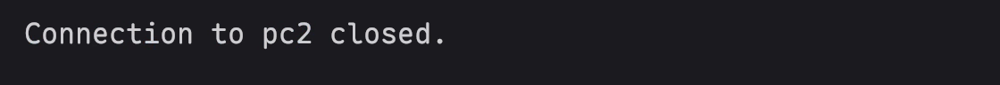
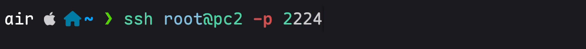
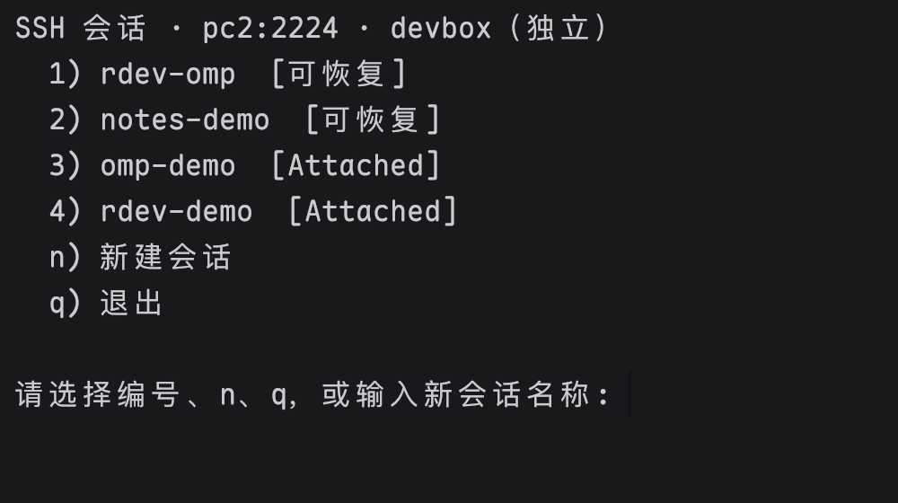

问题只有一个：SSH 一断，agent 就停了
Claude Code、Codex、OpenCode 这些 agent 跑在远程机器的 shell 里。笔记本合盖、换个 Wi-Fi、地铁进隧道，SSH 断开，shell 被回收，跑到一半的任务也没了。
常见的解法是换工具：tmux 接管你的终端，鼠标、滚动、复制全变了手感；专门的远程 IDE 或 AI 终端，又要你放弃用了多年的 iTerm2、Ghostty、Warp 和一整套 shell 配置。
rdev 的做法是只在服务器上加一层会话保持。终端还是你的终端，agent 还是你的 agent，ssh 还是那条 ssh。
它是怎么工作的
底层是 shpool，Google 开源的会话保持工具
它只做一件事：把 shell 从 SSH 连接里解耦出来。它不是终端复用器，不画窗格、不接管键盘和鼠标，所以你的终端还是原来的终端。rdev 负责把它配好，并在登录时给你一个菜单。
重连时不回放，只交还
重新连上后，rdev 把终端交还给原来的程序并通知它重绘。Claude Code 这类 TUI 会自己把界面画回来，不会出现错位和重复内容。
滚动、复制，都还是本机的事
没有 copy-mode，没有前缀键。鼠标滚轮翻的是你终端自己的回滚缓冲，选中就是复制，链接可以直接点。
断线再连接，回到同一个任务
不用换终端，也不用重新交代任务。照常 ssh，选回原会话，远程 AI agent 接着跑。



截图来自同一次 Kaku 真实录屏，仅裁去无关区域和 Ubuntu 登录提示。点击截图可查看大图；完整过程见上方 20 秒演示。
安装
在你自己的电脑上运行，按提示输入服务器地址（user@host、user@host:2222 或 ssh 别名）。已经在服务器里？地址留空，就是配置当前这台机器。
curl -fsSL https://leafiy.github.io/rdev/install.sh | bash
不想交互：把地址跟在后面，| bash -s -- dev@box:2222。密钥 -i、跳板 -J 和 ssh 一样写。
脚本做了什么
- 用 ssh 连到服务器，全程复用一条连接，只输一次密码。
- 在本机下载 shpool 的静态二进制并推过去，服务器访问不了 GitHub 也没关系。不需要 root，不装包管理器里的任何东西。
- 写一份 shpool 配置：不改提示符、重连只交还不回放。
- 在 ~/.zshrc 或 ~/.bashrc 末尾加一段带标记的钩子，只在交互式 SSH 登录时弹菜单；ssh host 命令、scp、rsync、VS Code Remote 一律不受影响。
需要什么
- 本机：ssh、curl。macOS、Linux、WSL 都行。
- 服务器：Linux x86_64 / arm64（或 Apple Silicon 的 macOS），登录 shell 为 zsh 或 bash。
之后每天的用法
# 照常登录，看到菜单，回车恢复上次会话 ssh dev@box # 跳过菜单直达某个会话 ssh -t dev@box '~/.local/bin/rdev attach work' # 在服务器上 rdev # 菜单 rdev list # 列出会话与其中运行的 agent rdev kill work # 结束一个会话 rdev doctor # 检查安装状态
会话里按 Ctrl-Space Ctrl-q 离开但不结束；直接关窗口或断网效果一样。菜单里按 q 进入普通 shell。
卸载
rdev uninstall
在服务器上运行。只删钩子、程序和下载的二进制，正在运行的会话不受影响。
常见问题
会动我服务器上的什么？
三样：~/.local/bin/rdev 和 ~/.local/share/rdev/bin/shpool 两个文件，~/.config/rdev/shpool.toml 一份配置，以及 ~/.zshrc / ~/.bashrc 末尾一段用 # >>> rdev >>> 标记包起来的钩子。不碰 sshd，不需要 root，不装系统包。
支持哪些终端？
任何能 ssh 的终端：iTerm2、Terminal.app、Ghostty、Kitty、WezTerm、Alacritty、Warp、Windows Terminal、Tabby、Termius。因为本机什么都不装，所以谈不上“支持”，它只是照常工作。
鼠标滚动和复制还正常吗？
正常。rdev 不是多路复用器，没有 copy-mode。滚轮翻的是你终端自己的回滚缓冲，选中即复制。
断线前已经输出到你终端里的内容仍在你的回滚里；换一个新终端窗口重连时，从当前画面继续，历史输出不回放。这是为了让 agent 的界面在重连后保持干净。
不想每次都进菜单？
菜单里按 q 进入普通 shell；直达某个会话用 ssh -t 主机 '~/.local/bin/rdev attach 名称'；完全跳过用 ssh -t 主机 'RDEV_SKIP=1 exec $SHELL -l'。非交互的 ssh 主机 命令、scp、rsync、git、VS Code Remote 本来就不会触发菜单。
和 tmux、mosh 有什么区别？
tmux 是终端复用器，会接管整个终端：窗格、前缀键、copy-mode、自己的鼠标处理。它能保持会话，但代价是你的终端不再是你的终端。
mosh 解决的是网络抖动和漫游，本身不保持会话（服务端进程结束会话就没了），还要本机装客户端、服务器开 UDP 端口。rdev 只做会话保持，本机零安装，走的还是普通 ssh。
服务器重启了会怎样？
会话随之消失，这一点和 tmux 一样。重启后第一次 ssh 登录时 rdev 会自动把守护进程拉起来，不需要你做任何事。
多个终端能同时连同一个会话吗？
一个会话同一时间只属于一个终端。在菜单里选一个“已连接”的会话，就会从原来那个终端接管过来。想并行就多开几个会话，每个会话里跑一个 agent。